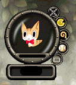

提供情報或編輯請求，請到情報提供公佈欄、編輯公佈欄。
■目錄
現有的Bug
部分寵物HP只有20
即使在露天商店廣場，也會被神秘之玉等將寵物HP變成0
HP變成0的寵物雖然可以叫出，但飢餓度會減少，經驗卻不會增加
經驗值條在到達100%之前就升級了
叫出寵物後登出，再次登入時所有輔助都會消失
在狩獵挑戰中叫出寵物會降低掉落率
基本
- 取得方式
因為是付費道具，可在商城以750點購買。
存在狗、貓、企鵝、熊貓、毛茸茸綿羊、羊駝、雪兔共7種。
購買的寵物不會消失，但會因後述的飢餓度下降而逃走。- 寵物僅在2008年8月7日~2008年9月3日期間限定販售
- 2009年4月28日起狗・貓開始常態販售，熊貓限定期間販售
- 2011年8月3日起毛茸茸綿羊・羊駝・雪兔開始常態販售
- 使用方法
- 寵物的等級上限為200。
- 連點兩下寵物召喚即可叫出寵物。
- 寵物會依叫出的時間累積經驗值並升級。
- 寵物會依叫出的時間逐漸變餓。
- 寵物功能中，有些使用後會減少飢餓度。
【注意】持續飢餓狀態寵物會逃走，請多加注意。 - 填飽飢餓度的寵物飼料於櫻花村NPC「寵物大師」處販售。
- 叫出寵物後，有「獲得Glod量增加」「道具掉落率增加」等效果。
※效果需寵物達到一定等級。 - 寵物逃走時，可使用「召回哨子」叫回。
(補充：召回哨子為付費道具，購買需1000點。使用1次即消失) - 與守護動物不同，可免費更改名字。(消耗飢餓度10)
- 點擊寵物視窗最上方的X即可收起寵物。
引用自官方網站-支援-FAQ-付費購買-關於寵物的使用方法（9/2更新）
- 關於寵物的魔法
寵物的魔法有礦物探測、回城點、等待。- 礦物探測目前尚未實裝。
- 使用回城點會消耗飢餓度10，可往返狩獵場。
- 使用等待，寵物會停留在目前的位置。
- 關於寵物的遊戲
寵物的遊戲有玩球、猜拳。- 玩球的效果不明。
- 猜拳時寵物贏了+1、輸了-1，飢餓度會隨之增減。
外觀＆基礎能力值
| 狗 | 貓 | 企鵝 | 熊貓 | 毛茸茸綿羊 | 羊駝 | 雪兔 |
Lv1~40
Lv41~70
Lv71~200
詳細圖片
從數種寵物中隨機分配？
 HP HP | 9999999 | ||
| AC | ？ | 100 | -45 |
| MC | ？ | 100 | -45 |
 AAR AAR | ？ | 0 | 99 |
| SAR | ？ | 0 | 99 |
 STR STR | ？ | 127 | 3 |
| DEX | ？ | 200 | 200 |
| INT | ？ | 200 | 200 |
| WIS | ？ | 127 | 3 |
| CON | ？ | 127 | 3 |
能力值
 關閉 |
收起寵物
與寵物對話
| 寵物的狀態 | 寵物會說出飽食度？ |
| 對話 ON | 與他人對話 ON/OFF |
| 對話一覽 | 顯示對話一覽 |
使用寵物魔法
| 礦物探測 | 未實裝 |
回城點
| 等待 | 寵物會停留在原地。 |
與寵物玩耍
| 玩球 | Lv.21～ |
 猜拳 猜拳 | Lv.11～ |
寵物狀態
Glod・道具掉落增加率
| LEVEL | PERCENT |
| Lv1～Lv20 | 增加1% |
| Lv21～Lv30 | 增加2% |
| Lv31～Lv40 | 增加3% |
| Lv41～Lv50 | 增加4% |
| Lv51～Lv60 | 增加5% |
| Lv61～Lv70 | 增加6% |
| Lv71～Lv80 | 增加7% |
| Lv81～Lv90 | 增加8% |
| Lv91～Lv98 | 增加9% |
| Lv99～Lv100 | 增加10% |
| Lv101～Lv110 | 增加11% |
| Lv111～Lv120 | 增加12% |
| Lv121～Lv130 | 增加13% |
| Lv131～Lv140 | 增加14% |
| Lv141～Lv150 | 增加15% |
| Lv151～Lv160 | 增加16% |
| Lv161～Lv170 | 增加17% |
| Lv171～Lv180 | 增加18% |
| Lv181～Lv190 | 增加19% |
| Lv191～Lv199 | 增加20% |
| Lv200 | 增加21% |
※寵物能提升掉落率的道具為可堆疊的道具（加利佛票券等、各種靈魂寶石、 高級速度藥水[30分]、快速藥水[30分]）等。
高級速度藥水[30分]、快速藥水[30分]）等。
※組隊時，持有寵物的人給予最後一擊，寵物的效果會套用於全隊。
※組隊時，沒有帶寵物的人給予最後一擊，寵物的效果不會套用。
可說的話一覽
與守護動物不同，很特別，需先加半形的「/」輸入寵物名字後
再加半形空格「 」輸入單字即會有反應
例 寵物名字為小純、單字為問候的情況 → /小純_問候
輸入後即會有反應
對話能力不同，回應可能也不同？
對話能力 1～40 初級
對話能力41～70 中級
對話能力71～ 上級
有些回應會依飢餓度而改變。
對話一覽
命令語帶有冒號「:」的，
/寵物名 命令語 :想讓牠說的話
的形式。
命令語帶有單引號「'」的，
/寵物名 命令語 '角色名
寵物的回應，由上依序為狗・貓・企鵝・熊貓・毛茸茸綿羊・羊駝・雪兔
等級為寵物的等級
| 等級 | 命令語 | 通常時的寵物回應 | 飢餓時的寵物回應 |
| 1,10 | 問候 | ？？，你好汪。 | |
| 喵？，你好喵。 | ･･･喵。 |
啾？，啾！
嗷？，你好
咩～！
呋～？，你好！
你好！
| 5,15 | 名稱 | 名字是什麼汪？ |
| 名字是什麼喵？ | 肚子餓了喵！！ |
名・・・字？
名字？，？？
名・・字？
那是什麼！
嗯？
| 10 | 拍手 | 啪啪啪啪。 |
啪啪啪啪。
啪嗒啪嗒啪嗒啪嗒。
啪啪啪啪
啪啪啪啪。
啪啪啪啪。
啪啪啪啪。
| 15 |  可愛 可愛 | 謝謝汪。 |
| 喵～～。 | 吵死了喵！ |
啾！啾！
哼哼
咩嘿！
那當然吧！
謝謝～
| 20 | 可愛的舉動 | 搖搖尾巴。 |
| 我知道喵，但是祕密喵。 | ･･･有人叫我嗎？ |
謝謝啾！
搖搖屁股
感謝咩～！
毛皮蓬鬆鬆～。
好像要融化了。
| 23 | 我愛你 | 汪汪！收下主人的愛了汪。 |
| 被這樣說會害羞喵。 | 不需要膚淺的愛喵。 |
好害羞啾！
最喜歡主人了
咩。（害羞）
別說得這麼輕鬆！
？？
| 26 | 肚子餓了嗎？ | 汪汪！不餓汪。 |
| 還好，沒事喵。 | 快點給飯喵！！ |
沒問題啾
再多給一點！
沒問題咩
不問就不知道嗎？
？？
| 30 | 害羞 | 臉要紅了啦～主人！ |
喵・・・別這樣盯著看。會害羞喵。
啾？
不要看啦～
咩？
被這樣盯著看會不好意思吧！
？？
| 33 | 害怕 | 一點也不怕汪。因為主人在旁邊嘛。 |
還算可以喵・・・還撐得住喵。
啾～～～！（發抖）。
| 嗯？怕是什麼？討厭的事嗎？ | 肚子餓了好可怕 |
咩～～～！！（毛茸茸）。
怎麼可能會怕！別瞧不起人！！
？？
| 36 | 什麼？ | 汪，主人！有什麼事嗎？ |
| 最喜歡長尾巴喵。 | ･･･喵･･･啊･･･。 |
沒事啾。
| 嗯？什麼？要給我什麼嗎？ | 主人是配菜？ |
沒事咩～。
有什麼事？沒事別叫我！
？？
| 40 | 抱抱 | 主人！會冷嗎？馬上幫你暖和起來汪。 |
| 已經不是小孩了喵。 | 很臭所以不要喵！！ |
好開心啾！
| 哇～，不過我會不會很重？沒問題嗎？ | 可以吃主人嗎？ |
好開心咩～！
還是不要勉強比較好･･･。
？？
| 43 | 治療 | 汪汪！請誰來一下。 |
喵、喵啊･･･流血了喵！！，塗點口水就會好喵。
啾啾，不得了啾
| 塗點口水就會好啦！要我幫你舔嗎？ | 給我飯就考慮 |
咩～～，不得了咩
痛痛，飛走吧！
？？
| 46 | 安慰 | 嗚～。主人，打起精神來。 |
| 喵喵。世間很嚴苛喵。 | 該是我想被安慰喵。 |
啾～，沒事吧？
| 主人沒事吧？嗚哇～～ | 飯先吃！ |
咩咩，沒事吧？
這點程度沒事！打起精神來！！
？？
| 49 | 吐舌鬼臉 | 那個･･･你剛剛是不是在瞧不起我？應該沒有吧。 |
| 喵！！瞧不起我會生氣喵！ | 喵～！！ |
我也要吐舌鬼臉啾
| 哼，才不管主人呢。 | 拜拜 |
咩～！（驚）
你在瞧不起我嗎！？
？？
| 53 | 卡 | 啊･･･是失敗了嗎？請原諒我，主人。 |
| ？？ | 一點都不可怕喵。 |
嗚哇～･･･對不起啾～
| 我做了什麼壞事嗎？吶告訴我嘛。 | 討厭！ |
咩嗚…
哪裡不行？
？？
| 56 | 敬禮 | 汪！！主人！！ |
| ？？ | ･･･好麻煩喵。 |
啾！
| 是！哼哼！ | 開戰前要先吃飯！ |
咩！
是！主人！
？？
| 59 | 突擊 | 突擊！！我走在最前面汪！！ |
| ？？ | 路上小心。 |
好怕啾･･･
突擊？我不要痛痛喔？
咩～～～…（怕）
先做個示範給我看！！
？？
| 63 | 後退 | 嗚嗚，雖然不甘心但還是撤退汪！下次不會輸汪。 |
| ？？ | 好遜喵。 |
逃跑啾～
| 咦？等一下啦！我沒辦法跑那麼快啦～ | 拜拜 |
毛茸茸茸…
不要先逃啦～。
？？
| 66 | 慶祝 | 主人！真的恭喜汪！話說今天是慶祝什麼呢？ |
| ？？ | 一點都不值得慶祝喵。 |
恭喜啾～！好開心啾～
| 恭喜～！大餐是什麼呀？ | 飯還沒好嗎？ |
恭喜！毛茸
恭喜！慶祝會盛大舉辦對吧？
？？
| 69 | 玩笑 | 汪德富！！ |
| ？？ | 不是開玩笑的時候喵･･･。 |
・・・對・・・對不企鵝・・・嗚嗚・・・。
| 你知道我愛吃什麼嗎？…是麵包！ | 主人就是今天的飯吧。 |
・・・對不起咩・・・。
最討厭開玩笑了！！
？？
| 73 | 撒嬌 | 哪有，主人才更可愛呢。 |
| ？？ | ･･･。 |
嘿嘿，好開心啾。
我可愛嗎？很可愛對吧？
嘿嘿，好開心咩。
毛球蓬鬆鬆的很可愛吧？
？？
| 76 | 可愛的動作 | 主人！請看我的眼睛！(閃閃發亮)。 |
| ？？ | ･･･（打哈欠） |
啾～？（偷瞄）。
聽我唱歌喔！嗷！嗷嗷嗷！嗷嗷嗷嗷！
咩～～。（毛茸茸茸）
蓬蓬～軟軟～。
？？
| 79 | 唱歌 | 汪汪汪汪～汪。汪汪汪汪～汪。 |
| ？？ | 喵･･･好了結束喵。 |
企～鵝真～～是太～棒了～～～。
熊貓不擅長唱歌，主人你唱吧！
咩～～咩嗚～～
呋～呋呋～呋～。
？？
| 81 | 道歉 | 主人！請罵我吧。 |
| ？？ | 該道歉的是你喵。 |
對不起啾～
？？
對不起・・・
都說對不起了嘛！
？？
| 83 | 過分 | 嗚～。是做了壞事的我不對。請原諒我。 |
| ？？ | 想想誰比較過分比較好喵。 |
嗚～，對不起啾･･･。
？？
咩～，對不起咩…。
到底是怎樣！？太過分了！！
？？
| 85 | 支援 | 主人，危險！各位請幫忙！ |
| ？？ | 那是什麼？ |
請等我啾！現在就去啾！
？？
上囉！衝啊！咩～～
自己做得到吧！不要撒嬌！！
？？
| 87 | 受罰 | ？？ |
| ？？ | 喵啊啊！！ |
對不起啾，不會再犯了啾･･･
？？
抱歉咩，咩…
錯的是主人吧！！
？？
| 89 | 吼叫 | 汪汪！！咕嚕嚕嚕嚕！！！ |
？？，嘶啊啊！！
啾～～～～～～～～～～～～～～！！
？？
咩～～～！！
呋～～～～～～～～～～～～！
？？
| 91 | 模仿 : | ？？ |
？？
？？
？？
？？
？？
？？
| 92 | 拜託' | 8/22目前尚未實裝 |
9/1目前尚未實裝
8/31目前尚未實裝
？？
？？
？？
？？
| 93 | 歡呼 | 汪汪汪汪！！ |
？？
啾啾！
？？
？？
？？
？？
| 94 | 無禮' | ？？ |
？？
？？
？？
？？
？？
？？
| 95 | 哭泣 | ？？ |
| ？？ | 連眼淚都流不出來喵･･･。 |
啾～～～～～～～。
？？
？？
？？
？？
| 96 | 饒恕' | ？？ |
？？
？？
？？
？？
？？
？？
| 97 | 感謝的問候' | ？？ |
？？
？？
？？
？？
？？
？？
| 98 | 道別的問候' | ？？ |
？？
？？
？？
？？
？？
？？
| 98 | 禮儀' | ？？ |
？？
？？
？？
？？
？？
？？
| 99 | 侮辱' | ？？ |
？？
？？
？？
？？
？？
？？
| 99 | 告白' | ？？ |
？？
？？
？？
？？
？？
？？
經驗值表
| LEVEL | EXP |
| Lv21 | ～268,740 |
| Lv31 | 868,680 |
| Lv41 | 2,034,552 |
| Lv51 | 3,902,484 |
| Lv61 | 6,736,884 |
| Lv71 | 10,591,680 |
| Lv81 | 15,860,412 |
| Lv100 | ～29,724,324 |
| Lv121 | ～52,793,256 |
| Lv132 | ～68,528,040 |
| Lv141 | ～84,342,480 |
| Lv151 | ～102,819,144 |
| Lv161 | ～125,605,644 |
| Lv171 | ～149,297,496 |
| Lv181 | ～177,677,496 |
| Lv191 | ～207,943,740 |
| Lv199 | ～235,855,512 |
| Lv200 | ～238,806,684 |
其他備忘
付費裝備道具一個月就會消失
[註]付費裝備從等級71起
回城點的規格
使用後會飛到故鄉。
飛到故鄉後，再次使用會回到最初使用的地點。
往返藥店與狩獵場時，若在盧亞斯等室內的藥店使用回城點，藥店會被記錄下來，需多加注意。
於「修」驗證的結果(08/08/24時點)：
盧亞斯民宅→(回城點)→魔界村→(傳送門)→科斯莫佛利亞→(回城點)→魔界村
盧亞斯民宅→(回城點)→魔界村→(傳送門)→斯歐米→(回城點)→盧亞斯民宅
盧亞斯民宅→(回城點)→魔界村→(傳送門)→卡勒瓦拉→(回城點)→魔界村
盧亞斯民宅→(回城點)→魔界村→(傳送門)→萊貝雅→(回城點)→魔界村
盧亞斯民宅→(回城點)→魔界村→(傳送門)→米魯里斯→(回城點)→盧亞斯民宅
盧亞斯民宅→(回城點)→魔界村→(重新登入後回城點)→盧亞斯民宅